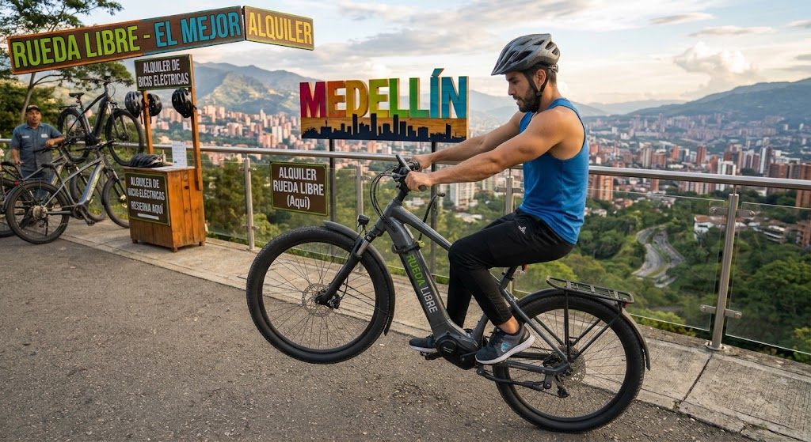
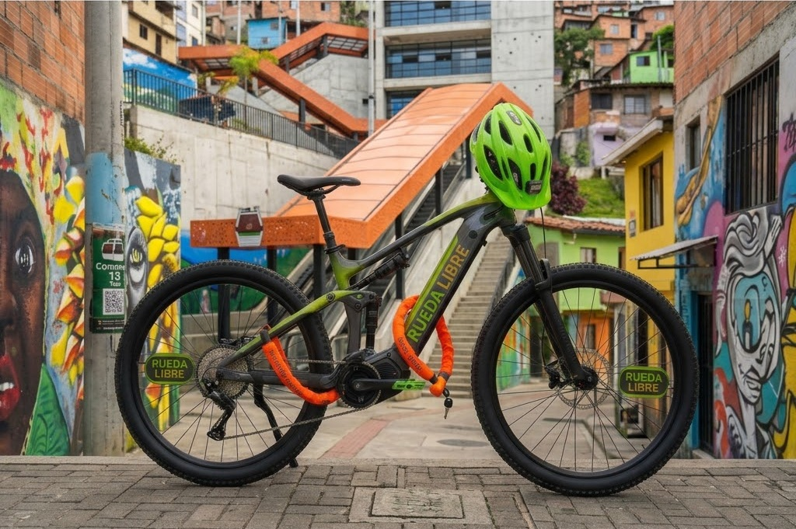
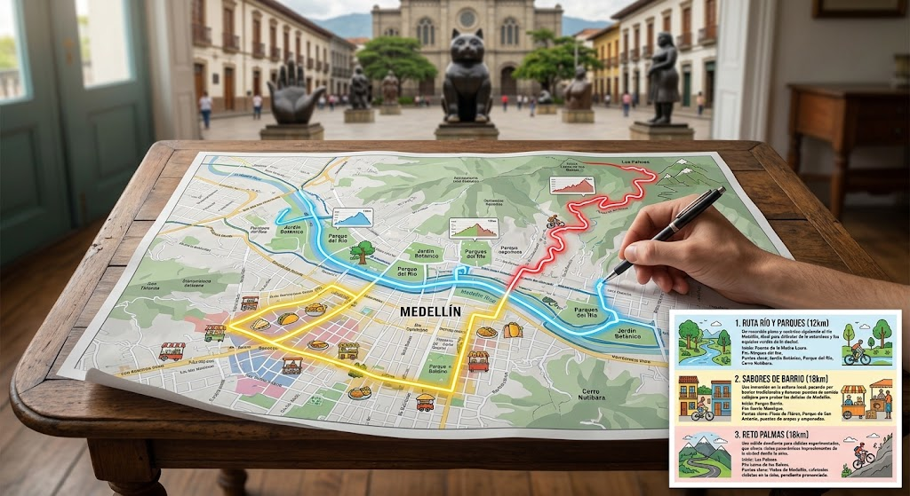

Quiénes Somos
Rueda Libre es una empresa dedicada al alquiler de bicicletas en Medellín. Ofrecemos una amplia variedad de bicicletas para todos los gustos y necesidades, desde bicicletas urbanas hasta bicicletas de montaña. Puedes encontrarnos aqui
Nuestros Servicios
Alquiler de bicicletas por hora o día completo

Ofrecemos alquiler de bicicletas por hora o por día completo. nuestro servicio está diseñado para ofrecer la mejor experiencia de alquiler en la ciudad. Te equipamos con todo lo necesario para disfrutar de tu experiencia en bicicleta: casco, candado.
Beneficios
- Variedad de bicicletas para todos los gustos y necesidades.
- Precios competitivos y flexibles.
- Asesoramiento personalizado para elegir la bicicleta adecuada.
Rutas guiadas por la ciudad
Ofrecemos rutas guiadas por la ciudad para que puedas descubrir los mejores lugares de Medellín en bicicleta.

Beneficios
- Conoceras la ciudad de una manera diferente y divertida.
- Acceso a áreas exclusivas de la ciudad.
- Almuerzo incluido en algunas rutas.
Mantenimiento y reparación de bicicletas
Contamos con un taller de mantenimiento y reparación de bicicletas para que tu experiencia sea siempre segura y agradable.
Beneficios
- Mecanicos certificados.
- Reparación rápida y eficiente.
- Disponibilidad de repuestos y accesorios.
¿Como alquilar?
- Visita nuestra página web y selecciona la bicicleta que deseas alquilar.
- Dirígete a nuestra sede para realizar el registro.
- Realiza el pago correspondiente.
- Recibe tu bicicleta y disfruta de tu experiencia en bicicleta.
Contacto
Encuentranos
Ver ubicación de la sede en Google MapsTeléfono: +57 123 456 7890
g